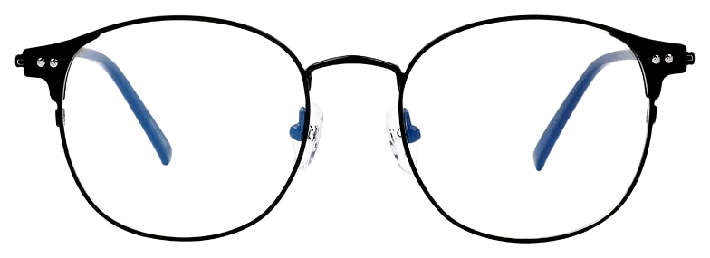
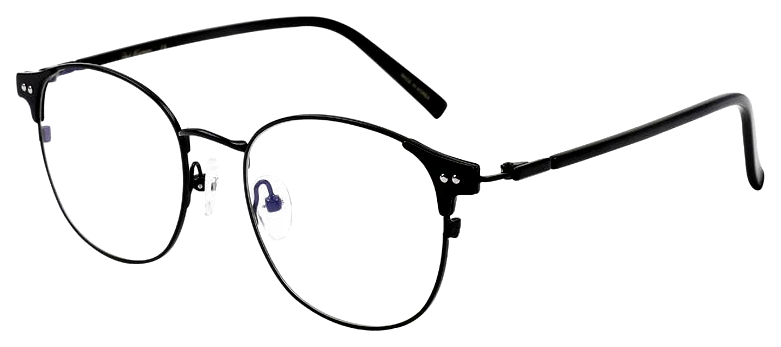
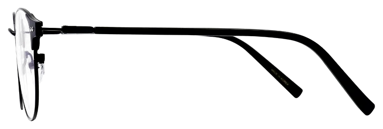

PAUL HUEMAN
PHF-5246D
New in store
Paul Hueman
Round-square · Riveted brow
The lens
HOYA Nulux iDentity V+
Sharp vision. Tailored to you.
The coating
HOYA Hi-Vision Meiryo
Clarity that lasts.
100% UV protection
New in store
Paul Hueman PHF-5246D · HOYA